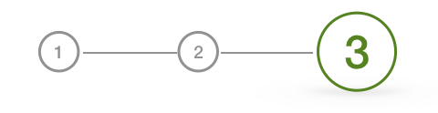
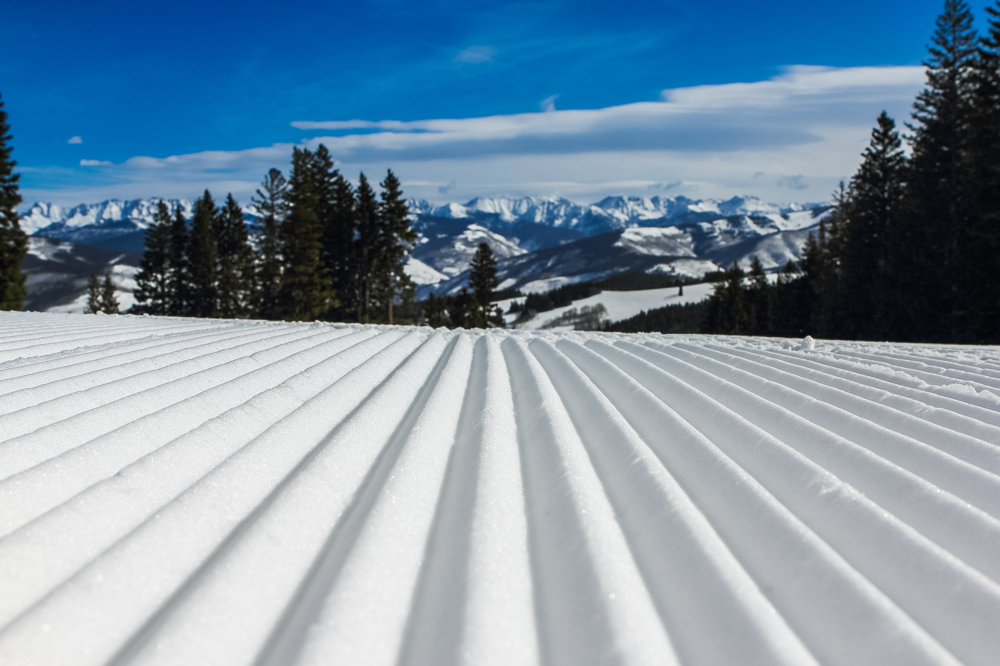

Clim∞

Step 3. Choose your destination...
As a rule of thumb, the closer you travel the better for the environment.
If you want to travel further,
make sure you choose an environmental friendly way of transportation.
 Romme
 Åre
Åre  Trysil
Trysil  Zell am See
Zell am See